设 为UFD(即唯一析因整环,例如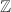),
为UFD(即唯一析因整环,例如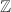), 为域(例如
为域(例如 )，则也是UFD，对其上两多项式可讨论GCD问题.最古典的方法即是Euclid算法。然而，在上世纪六十年代末一些试验中发现这种算法在或中的系数增长很快，甚至于指数式。
)，则也是UFD，对其上两多项式可讨论GCD问题.最古典的方法即是Euclid算法。然而，在上世纪六十年代末一些试验中发现这种算法在或中的系数增长很快，甚至于指数式。
为了解决这一问题，1971年，Collins,Brown提出了UFD上的多项式模最大公因子算法。对于多元情形，Mozes和Yun于1973年提出了基于Hensel提升方法的模因子算法。下面对经典的Euclid算法和改进算法进行论述。
 Euclid算法
Euclid算法
在Euclid整环中,我们有如下的Euclid除法:
 ,则存在唯一的使得
其中.定义此除法过程为Euclid除法,并且记商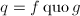,余式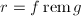.
,则存在唯一的使得
其中.定义此除法过程为Euclid除法,并且记商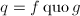,余式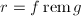.
是Euclid整环，因而有以下的扩展Euclid算法：
 ,,
,, ,Bezout等式中的系数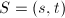使得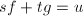.
,Bezout等式中的系数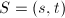使得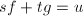. .
.实际上在计算机中进行的是![$\mathbb{Q}[x]$](latex/latex2png-PolyGCD_27044295_-5.gif) 上的运算，我们总可以找到整数乘到该多项式上使其化为
上的运算，我们总可以找到整数乘到该多项式上使其化为![$\mathbb{Z}[x]$](latex/latex2png-PolyGCD_27044286_-5.gif) 上的多项式。
上的多项式。
 定义为：其中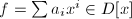，且gcd对单项的定义为
定义为：其中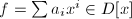，且gcd对单项的定义为
 ，若
，若 ,则称其为本原多项式。
,则称其为本原多项式。
 和相伴当且仅当存在一个单位
和相伴当且仅当存在一个单位 使得.在这个等价关系下将UFD分类,在每个等价类中可取一个代表元,并记所在类的代表元为.对于整数环,我们知道单位为
使得.在这个等价关系下将UFD分类,在每个等价类中可取一个代表元,并记所在类的代表元为.对于整数环,我们知道单位为 ,且可取.
,且可取.
类似的结论还有以下一些命题，相关内容可参阅相关的高等代数学内容,如[1].
于是有下面的：
 .
.尽管不是Euclid整环，但我们可引入上的伪除法，来构造类似Euclid余式序列。
 是本原多项式,将此过程称为多项式的伪除法,并记伪商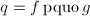,伪余式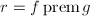.
是本原多项式,将此过程称为多项式的伪除法,并记伪商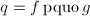,伪余式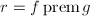.
 ，令,且对于
，令,且对于 ，令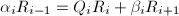,最后使得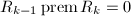,则称为多项式余式序列.
，令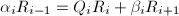,最后使得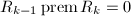,则称为多项式余式序列.
在用伪除法求最大公因子时就会导致系数增长很快，在后面介绍素数模方法之前，我们可以用下面定义的几个多项式余式序列一定程度上减小系数增长速度。
域上多项式的快速Euclid算法
1938年Lehmer最先提出了快速Euclid算法，后来Knuth(1970)，Schoenhage(1971),Moenck(1973),Aho,Hopcroft,UUman(1978),Schwartz(1980),Brent,Gustavson,Yun(1980),Strassen(1983)对这些算法也有论述。
在域(例如)中，Euclid算法可表示为（各 均为首一的）:
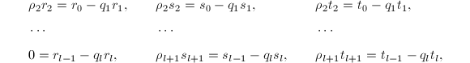
均为首一的）:
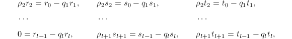
若设，还可记则
易知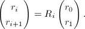
在随机情况下，可证明域 中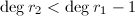的概率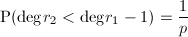，当素数很大时，可认为序列的下降速度很慢。为了说明快速Euclid算法，我们先引入下面一些定义和定理。该算法的基本原理在于利用多项式的前某些系数来计算余式序列.
中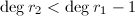的概率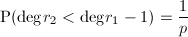，当素数很大时，可认为序列的下降速度很慢。为了说明快速Euclid算法，我们先引入下面一些定义和定理。该算法的基本原理在于利用多项式的前某些系数来计算余式序列.
 ,反之有.
,反之有.
易知该等价关系有如下性质：
关于-度重合，有如下重要的命题：
 的适当幂次后，可使成立，不妨设命题中的多项式已满足此式，则由定理6有.下面分两部分证明本定理。
的适当幂次后，可使成立，不妨设命题中的多项式已满足此式，则由定理6有.下面分两部分证明本定理。
(1)首先我们有如下四个不等式:
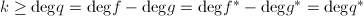,
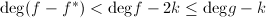(注意-截式取多项式的前 项),
项),
,
,
根据上面的不等式,由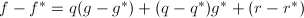可知,故.
(2)假定且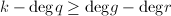,
,